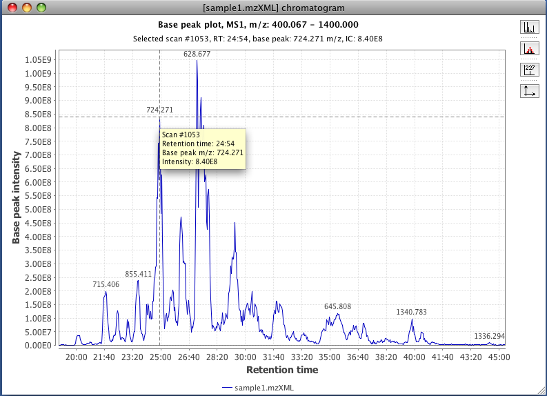
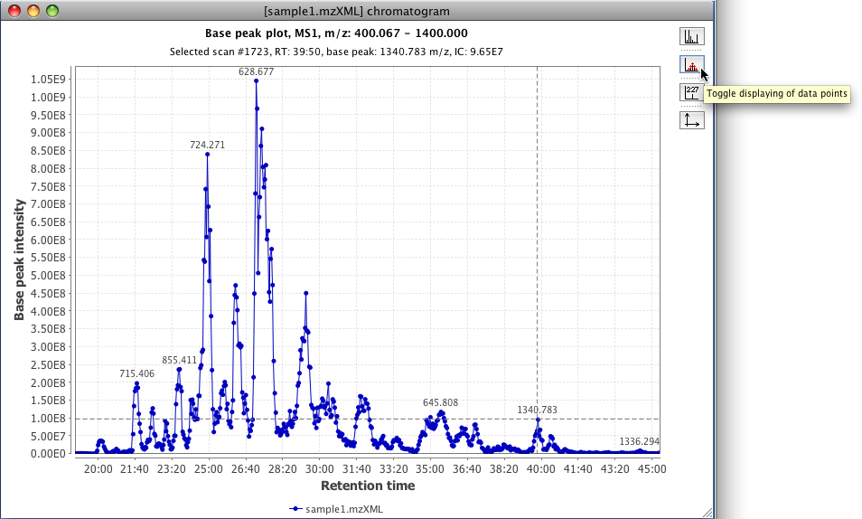

This tool displays a plot of two dimensions, where X axis corresponds to retention time and Y axis is the intensity level of the signal. This visualization of the raw data corresponds to the chromatographic appearance of the data.
Generally this plot is well used in MZmine to display chromatographic peaks.
Additionally in the parameters window, the button "Set automatically" allows the user to set all the ranges automatically. MZmine will use the maximum ranges allowed by the raw data.
This plot is using the third part library JfreeChart for its basic functionality. To zoom in, drag the mouse from left to right, selecting the area to zoom. To zoom out drag the zoom from right to left.
In the right part of the plot exist a group of icons which functionality is also included in a pop-up menu, which appears when you make right click on the plot area.
When the mouse is passed over the plot a tool tip appears showing the information of that data point. If left click is done a crosshair lines will appear, indicating the selected position. Using the first button from the right panel is possible to visualize the spectrum.

To display the data points in the plot use the second icon on the right panel.

To display the label of the data points or modified the range of the axis use the third and fourth button from the right panel respectively.
It is possible to display the data from other raw data files in the same TIC plot window by using the options in the pop-up menu (left click on the plot area).


The submenu contents and option called "Set same range to all windows", which apply the same x and y ranges values to other TIC plot windows
in the current project.